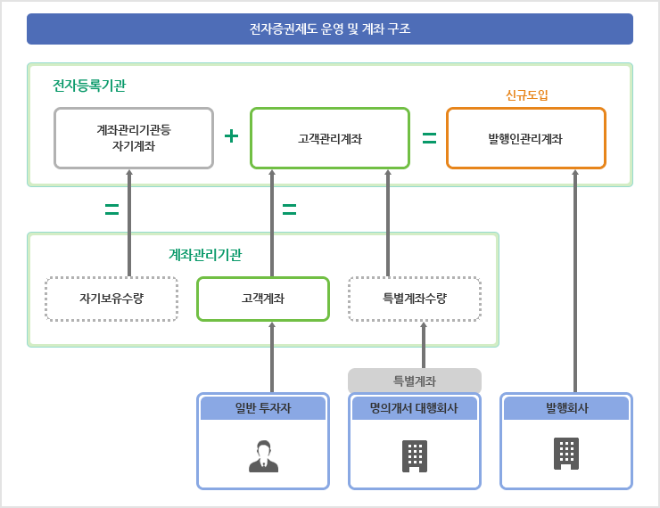

Section
마크업뷰중심 + 일부컨텐츠
Basic
Heading Text 3
section-body
Heading Text 3
Heading Text 4
Heading Text 5
Heading Text 6
문장은 Paragraph 입니다.
Wrapper
Header
Title
Title
(단위 : %)
Title
설명이 들어갑니다.
(단위 : %)
(출처 : 예탈결제원)
Paragraph
인재를 중시하고 키우는 기업문화, '기업이 곧 사람'이라는 신념을 바탕으로
모든 사람이 각자 고유한 역량과 잠재력을 가진 우수한 인재이며 세상을 움직이는 원동력임을 믿습니다.
회사별 채용공고 및 안내를 확인해 보시기 바랍니다.
새로운 지원서를 작성하거나 결과를 확인합니다.
회사별 채용공고 및 안내를 확인해 보시기 바랍니다.
설계가이드
- 여러줄/강제줄바꿈(줄간격), 문장단위(기본여백), 문단단위(그룹여백)를 구분한다.
Figure

- 전자등록기관 및 계좌관리기관이 전자등록계좌부*를 작성 및 관리하게 됩니다. 전자등록기관은 고객관리계좌, 계좌관리기관등 자기계좌와 발행인관리계좌를 관리하고, 계좌관리기관은 고객계좌를 관리하는 2-Tier 형태의 운영 구조입니다.
* 고객계좌부, 계좌관리기관 등 자기계좌부
- (전자등록기관) 한국예탁결제원은 전자등록업 허가를 받은 전자등록기관*으로서 발행인의 증권 발행내역과 계좌대체를 통한 증권 유통내역을 통합 관리하며 고객관리계좌부·발행인관리계좌부와 전자등록계좌부 대사를 통해 등록된 증권의 총수량을 관리합니다.
* 전자증권법 부칙 제8조(한국예탁결제원 등에 대한 경과조치)
- (계좌관리기관) 은행, 증권사 등은 투자자의 증권을 등록한 고객계좌부를 관리하고 투자자 권리행사를 처리하며, 전자등록기관의 고객관리계좌부와 고객계좌부 대사를 통해 투자자 보유 증권의 총수량을 관리합니다. 명의개서대행회사는 전자증권제도 시행일 이전까지 전자등록 대상 주식을 예탁하지 않은 주주 명부상의 주주를 한시적으로 관리하기 위한 특별계좌를 별도로 관리합니다.
- (발행인) 주식등을 전자등록하려는 발행인은 증권발행내역을 관리하기 위하여 전자등록기관에 발행인관리계좌를 개설하여야 합니다.
설계가이드
- 숨겨진 텍스트의 초점은 화면 밖으로 나가지 않도록 한다.